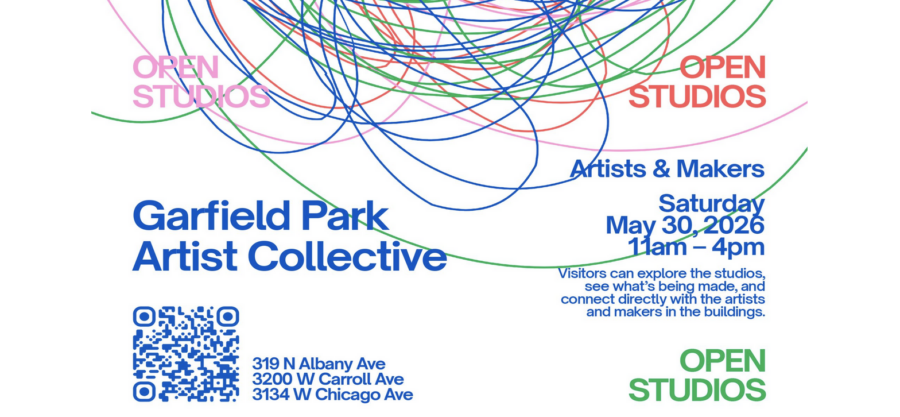

Garfield Park Artist Collective Open House
On Saturday, May 30, 2026, from 11 a.m. to 4 p.m., the Garfield Park Artist Collective will open the doors of three working-artist buildings on Chicago’s West Side for a free, one-day public Open Studio. Visitors are invited to step inside the studios of over 40 artists – meet the makers, see work in progress, watch live demonstrations, and shop directly from the people creating the city’s next wave of independent art. Spanning three nearby buildings, including two locations within 1 block, and a third just under a mile away in East Garfield Park, the Open Studio offers a rare, behind-the-scenes look at one of Chicago’s most active working-artist communities. Mediums on view will include photography, woodworking, screen printing, illustration, painting, ceramics, fiber and textile work, and original product design.
Four Buildings, One Self-Guided Route
All three buildings are open simultaneously and free to enter. A building map will be posted at every entrance, and signage will guide visitors from studio to studio.
Building 1: 319 N. Albany Ave
Building 2: 3200 W. Carroll Ave
Building 3: 3134 W. Chicago Ave
Free street parking